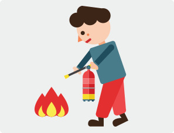

수난사고
수난사고
물놀이 활동시 지켜야할 10대 안전수칙과 사고 시 장소별, 상황별 대처요령을 알려드립니다.
또한 물놀이 시 침수·고립지역에서의 행동요령을 알려드리니 사전에 숙지하셔서 큰 피해에 대비합시다.
수난사고 발생 시 이렇게 행동합니다.
- 하천이나 계곡물을 건널 때
- 물결이 완만한 장소를 선정하여, 될 수 있으면 바닥을 끌듯이 이동하는 것이 안전하다.
- 시선은 건너편 강변 둑을 바라보고 건너야 한다.
- 이동방향에 돌이 있으면 될 수 있으면 피해서 가는 것이 안전하다.
- 지팡이 등으로 수심을 재면서 이동한다.(지팡이는 약간 상류 쪽을 짚는다.)
- 물의 흐름에 따라 이동하되 물살이 셀 때는 물결을 약간 거슬러 이동한다.
- 무릎 이상의 깊은 급류를 건널 때
- 건너편 하류 쪽으로 밧줄(로프)을 설치하고 한 사람씩 건너도록 한다.
- 밧줄은 물위로 설치하고 밧줄이 없을 때에는 여러 사람이 손을 맞잡거나 어깨를 지탱하고 물 흐르는
방향과 나란히 서서 건너도록 한다.
물에 빠졌을 때 이렇게 행동합니다.
- 물놀이 시 물에 빠진 경우
- 건너편 하류 쪽으로 밧줄(로프)을 설치하고 한 사람씩 건너도록 한다.
- 밧줄은 물위로 설치하고 밧줄이 없을 때에는 여러 사람이 손을 맞잡거나 어깨를 지탱하고 물 흐르는
방향과 나란히 서서 건너도록 한다.
- 선박(보트) 전복 등으로 물에 빠진 경우
- 물 밖으로 나온다.(공기 중에서 보다 물속에서의 체온손실이 많다.)
- 옷을 많이 입는다. (물에 빠졌을 때 옷을 벗어서는 안된다. 모직 옷을 두겹 정도 더 껴입으면 열손실이
속옷만 입었을 때보다 1/4감소한다.)
- 체온유지를 위해 수영이나 불필요한 동작은 하지 않는다.
- 수온 ℃에서 보통 정상적인 성인일 경우 수영가능 거리는 약 1해리(1,852m) 정도이다.
- 파도가 갑자기 높아져 위험할 때
- 물을 안 먹으려고 애쓰기 보다는 다소 마시게 되더라도 체력소모를 줄이도록 편안한 상태를 유지하는것이
안전하다.
- 머리는 수면상 위에 내밀고 큰 파도가 덮칠 때는 깊이 잠수 할 수록안전하다.
- 체력이 다하여 움직일 수 없거나 지쳤을 때 배영, 선헤엄 등으로 휴식을 취하면서 파도에 몸을 맡기는 것이
안전하다.
- 수초에 감겼을 때
- 수초에 감겼을 때는 부드럽게 서서히 팔과 다리를 움직여 풀어야 하고 만약 물 흐름이 있으면 흐름에 맡기고
잠깐만 조용히 기다리면 감긴 수초가 헐거워지므로 이때 털어버리듯이 풀고 수상으로 나오는 것이 안전하다.
- 놀라서 발버둥 칠 경우 오히려 더 휘감겨서 위험에 빠질 수 있으므로 침착하게 여유를 가지고 호흡하며,
서서히 부드럽게 몸을 수직으로 움직이면서 꾸준히 헤엄쳐 나오는 것이 안전하다.
- 체력이 다하여 움직일 수 없거나 지쳤을 때 배영, 선헤엄 등으로 휴식을 취하면서 파도에 몸을 맡기는 것이
안전하다.
의식없는 사고자를 구했을 경우 이렇게 행동합니다.
- 구조직후 응급처치
- 구조요원 또는 119에 아직 신고 되어 있지 않다면 즉시 신고한다.
- 가장먼저 인공호흡을 실시한다.(구조하면서 수중에서도 곧바로 실시해야 한다.)
- 물을 빼고자 복부나 등을 누르는 행위는 하지 않는다.
 사고자의 위속에 있는 물과 음식물을 오히려 역류시켜 기도를 막을 수 있으며, 구토물이 기도를 통해 페에 흡수될 가능성이 있기 때문에 물을 빼는 것이 더 위험 할 수 있다.
사고자의 위속에 있는 물과 음식물을 오히려 역류시켜 기도를 막을 수 있으며, 구토물이 기도를 통해 페에 흡수될 가능성이 있기 때문에 물을 빼는 것이 더 위험 할 수 있다.
또한 인공호흡이 늦어지게 되므로 그만큼 사고자의 소생가능성이 작아지며, 이후의 응급처치 요령은 일반적인 심폐소생술과 동일하다.
체온손실 응급처치
- 머리, 목 , 가슴, 사타구니 등의 체온 손실이 많다.
- 환자를 마른상태의 따뜻한 곳으로 옮긴다.
- 젖은 옷을 벗기고 따뜻한 물병이나 따뜻한 물에 적신 수건으로 가슴부위를 따뜻하게 해준다.
- 몸을 담요나 슬리핑백으로 감싸주고 추운 곳에 노출되지 않도록 하며 머리와 목을 따뜻하게 감싸준다.
 체온손실에 따른 신체증상
체온손실에 따른 신체증상
- 체온이 떨어지면 피부에서 차가운 기운을 느끼기 시작하며, 혈액순환이 감소되고 신체의 주요 기관의 활동이 저하된다.
- 혈액순환이 잘 되지 않으면 먼저 손과 발이 차가워지는 것을 느끼게 된다. 무의식적으로 근육의 떨림이 시작되고, 몸에서 열이 발산된다.
- 체온이 더 떨어지면 신체내부가 추워지기 시작하고, 신체외부의 혈액의 흐름이 더욱 감소되면 살아있는 기관의 온도유지를 위해 신체는 격렬한 방법을 택하게 된다.
- 떨림이 감소되거나 정지되며 내부기관 조직에 영향을 미치기 시작한다.
- 뇌가 차가워 지면 신체조종이 곤란하며,
의식을 잃게되고 즉각적이고 정확한 처치를 하지 않으면 생명을 잃게 된다.
보트 전복 등에 따른 대처


- 좌초시
- 즉시 기관을 정지하고, 좌초된 부분의 손상유무 및 침수가 되는지 확인한다.
- 침수가 되지 않을 시 : 주변의 저질이나 수심을 확인 후 보트 훅 또는 에비노 등을 이용하여 수심 깊은 곳으로
이동 후 기관을 사용 이탈한다.
- 침수 시 모든 수단(빌지펌프, 양동이, 물바가지)을 동원하여 물을 배출하고 파손부위 응급처치 자력으로
빠져 나갈 수 없을 때는 관계기관에 구조요청을 한다.
- 충돌 시
- 즉시 기관을 정지하고 인명안전 및 체의 손상장소와 정도를 확인한다.
- 침수 시 응급처치 후 침수할 염려가 있을 시 타 선벅에 승선자를 이동조치한다.
- 구조요청을 하고, 사후 사고처리를 위해 충돌장소, 일시, 상대선의 손상정도,
- 어망 및 부유물 등에 의한 사고 시
- 즉시 기관을 정지하고, 선체 나 추진기(프로펠러)에 어망이나 로프가 감겼을 시 보트 훅 또는 추진기를 들어 올려
감긴 것을 처리 후 이탈 소유자 및 유관기관에 통보한다.
- 제거 할 수 없는 경우 구조요청을 한다.
- 정박 중 화재발생 시
- '불이야' 하며 승선원 및 주변선박에 상황을 전파한다.
- 소화기, 모포 등으로 초기진화 하며, 진화가 불가능한 경우 관계기관에 화재신고를 한다.
- 항해 중 화재발생 시
- '불이야' 하며 승선원 및 주변선박에 상황을 전파한다.
- 발화지점이 풍하 쪽으로 향하도록 조종 후, 기관을 정지힌다.
- 소화기, 모포 등으로 초기진화 및 연료 등 위험한 것을 발화지점에서 멀리 이동 시킨다.
- 수심이 낮은 곳으로 좌초시키거나 접안 후 소화작업을 실시한다.
- 불이 선박전체로 확대되면 안전장비 착용 퇴선 하여 보트 가까운 곳에서 구조를 기다린다.
- 정박 중 침수 시
- 침수개소를 확인 및 침수상황을 확인한다.
- 침수개소의 손상 상황에 적합한 방수 및 파손부위를 응급처치 한다.
- 배수 작업실시 및 응급처치 불가한 경우 유관기관에 요청한다.
- 항해 중 침수 시
- 기관을 중립위치에 놓고 침수장소 - 상황 및 파손 정도 등을 확인한다.
- 침수개소를 확인하면 침수장소가 풍하 측으로 향하도록 조종 한다.
- 파손부위에 침수구에 나무(쐐기)나 헝겊을 채워 파손부의를 막는다.
- 파손부위가 큰 경우 모든 수단(빌지펌프, 양동이, 물바가지)을 동원하여 물을 배출하고 파손부위 응급처치
및 구조요청을 한다.
- 응급처치 후 적절한 속력으로 가까운 선착장으로 이동한다.
- 갯바위 등 바다낚시 사고예방 요령
- 구명조끼를 착용한다.
- 기상 상황을 수시로 확인하고 휴대폰 등을 활용하여 들물 시간 알람을 설정 미리 사고에 대응할 수 있도록 한다.
- 낚시 도중 수시로 주변 상황을 살핀다.
- 갯바위 등에 미끄러지지 않도록 신발(안전화)을 착용한다.
- 출입이 금지된 장소에는 절대로 들어가지 않는다.
- 위험에 처했을 때 도움을 받을 수 있도록 호루라기나 랜턴 등을 휴대하고 체온 보온용으로 담요를 준비하는
것도 좋다.
- 가족과 주변 사람에게 행선지와 일정을 미리 알려준다.
- 갯벌 해루질 사고예방 요령
- 구명조끼를 착용한다.
- 진입로로부터 멀리 떨어진 곳은 출입하지 않는다.
- 절대로 혼자 들어가지 않는다.
- 들물 시간을 확인하고 휴대폰 등에 알람을 설정하여 미리 대응할 수 있도록 한다.
- 갑자기 안개가 끼면 밀물 시간과는 관계없이 즉시 갯벌에서 나온다.
- 갯골을 넘어가지 않는다.
- 갯벌에 발이 깊이 빠진 경우 반대방향으로 엎드려 기어 나오며, 옆 사람의 도움을 받는다.
- 맨발로 들어가지 않는다.
수난사고
- 상식 준비운동을 한 다음 다리부터 서서히 들어가 몸을 순환시키고 수온에 적응시켜 수영하기 시작한다.
- 초보자는 수심이 얕다고 안심해서는 안된다. 배 혹은 떠 있는 큰 물체 밑을 헤엄쳐 나간다는 것은 위험하므로 하지 않는다.
- 통나무 같은 의지물이나 부유구, 튜브 등을 믿고 자신의 능력 이상 깊은 곳으로 나가지 않는다. 자신의 체력과 능력에 맞게 물놀이를 한다.
- 고립 지역에서의 행동
- 자기 체온 유지에 관심을 둬야 하며 무리한 탈출 행동은 삼간다.
- 가능한 모든 방법을 이용하여 구조신호를 보낸다.
- 가능하다면 라디오 방송을 청취하여 상황에 대처한다.
- 계곡에서 야영지를 선택할 때
- 계곡에서 야영지를 선택할 때는 물이 흘러간 가장 높은 흔적보다 위쪽에 있도록 하고, 대피 할 수 있는
고지대와 대피로가 확보된 곳을 선정하며 낙석과 산사태 위험이 없는 곳으로 선택한다.
- 물놀이사고 및 안전사고 발생 때는 즉시119(해상122)로 신고한다.
 교통사고
교통사고
 화재사고
화재사고
 어린이
어린이 수난사고
수난사고
 가축질병
가축질병
 감염병 예방
감염병 예방